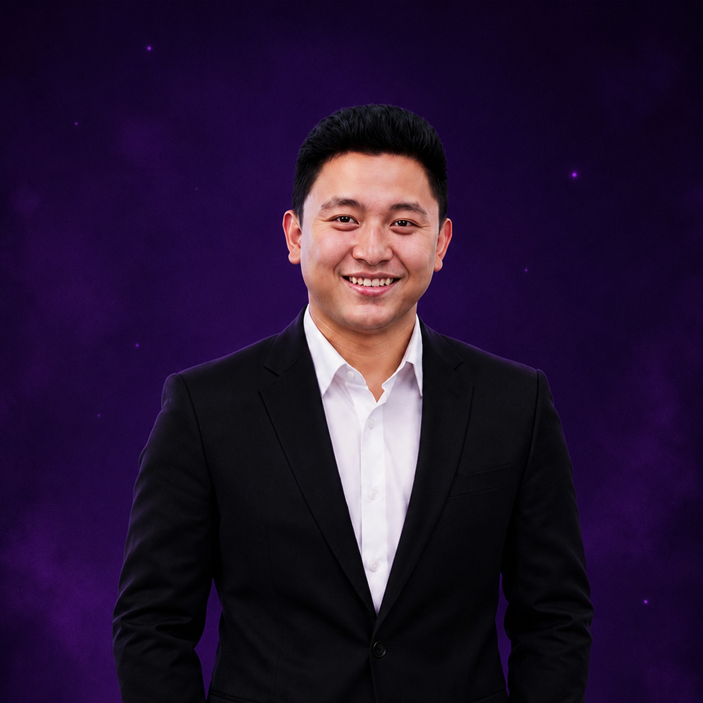

Supervisor Legal Process Documentation
Profesional berpengalaman di bidang dokumentasi proses legal & compliance dalam industri pertambangan. Memiliki keahlian dalam manajemen dokumen hukum, perizinan, dan regulasi pertambangan di Kalimantan. Mampu mengelola siklus hidup dokumen legal mulai dari pembuatan, review, approval, hingga arsip digital dengan sistematis.
Memastikan operasional mematuhi regulasi pemerintah dan standar hukum pertambangan.
Mengelola siklus hidup dokumen hukum secara sistematis dan terdigitalisasi.
Memfasilitasi proses perizinan tambang dan koordinasi dengan instansi terkait.
Membangun hubungan baik dengan pemerintah, masyarakat, dan mitra bisnis.
Kepatuhan penuh regulasi pertambangan 7+ tahun tanpa temuan fatal.
Sistem filing digital mempercepat tracking & retrieval dokumen.
Ribuan dokumen perizinan & kontrak berhasil dikelola.
Samarinda, Kalimantan Timur
melvincavellino19@gmail.com
linkedin.com/in/melvin-cavellino